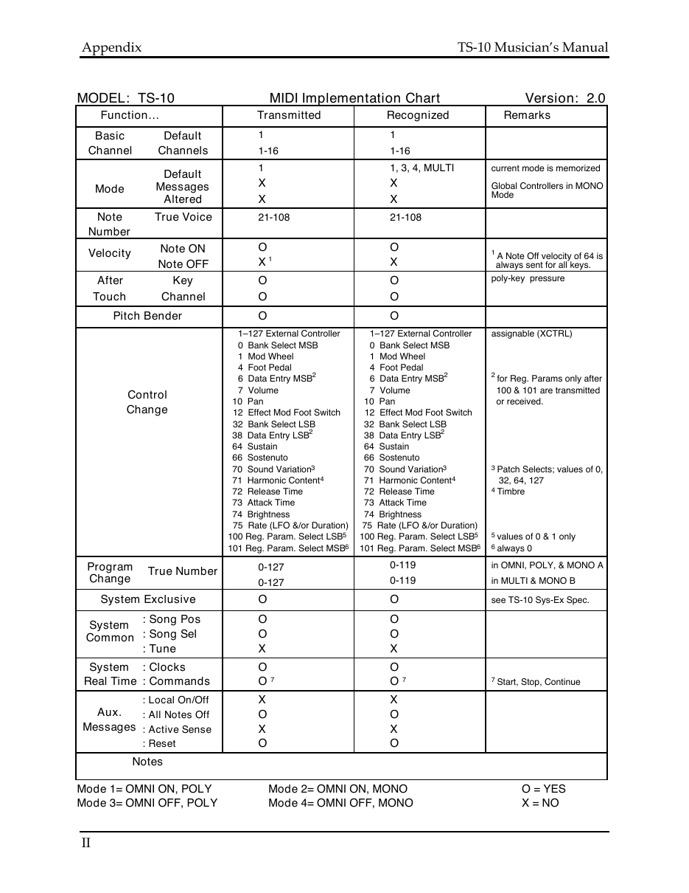

Performance / Composition Synthesizer · Version 3.0
Appendix — MIDI Implementation

TS-10 MIDI Implementation
The TS-10 features an extensive MIDI (Musical Instrument Digital Interface) implementation. For normal applications, you will find all the information you need regarding the TS-10’s MIDI functions in this manual. You can also refer MIDI Implementation Chart on the next page for a summary of the TS-10 MIDI implementation.
If you are writing a computer program to communicate with the TS-10 via MIDI, or otherwise require a copy of the full TS-10 System Exclusive Specification, it is available free of charge by writing to:
| ENSONIQ | Corp. |
| MIDI | Specification Desk |
| 155 | Great Valley Parkway |
P.O. Box 3035
Malvern PA 19355-0735
USA
Include in your written request your name and address, and indicate that you would like a copy of the “TS-10 System Exclusive Specification.” Please allow 2 to 3 weeks for delivery.
Registered Parameters Registered parameters are transmitted (as four sequential continuous controller messages) by the TS-10 whenever certain parameters are edited from the front panel. The two registered parameter controllers select the parameter and the following two data entry controllers specify the value.
Controllers
| Number | Name Value |
|---|---|
| 100 | Registered Parameter Select LSB 00 or 01 |
| 101 | Registered Parameter Select MSB always 0 |
Registered Parameters
Number Name TS-10 parameter range
| 00 | Pitch Bend Range | 0..12..0H..12H |
| 01 | Fine Tuning | 0..255 (displayed -99 to +99) |
| 02 | Coarse Tuning (GM Mode only) | 0..127 (displayed -64 to +63) |
The parameter values are sent as two Data Entry controller messages:
Parameter Data Entry MSB (6) Data Entry LSB (38)
Pitch Bend Range 0..25 0
Fine Tuning 0..127 (internal bits 1..7) 64 or 0 (internal bit 0)
For Fine Tuning, which is an 8-bit value internally, the most significant 7 bits are offset by 64 and shifted once before being sent as Data Entry MSB (Controller 6). The least significant bit of the internal value is transmitted as bit 6 of Data Entry LSB (Controller 38).
In most system modes, registered parameters 0 and 1 affect the System page TUNE and BEND parameters respectively (when received on the Base Channel only). In General MIDI mode, registered parameters 0, 1, and 2 are received multi-timbrally, and affect each Track/Channel independently.
Basic Default 1 1
Channel Channels 1-16 1-16
Default
Note True Voice 21-108 21-108 Number
A Note Off velocity of 64 is
Touch Channel O O
| Pitch Bender | O | O |
|---|---|---|
| 1–127 External Controller | 1–127 External Controller | assignable (XCTRL) |
| 0 Bank Select MSB | 0 Bank Select MSB | |
| 1 Mod Wheel | 1 Mod Wheel | |
| 4 Foot Pedal | 4 Foot Pedal | |
| 6 Data Entry MSB2 | 6 Data Entry MSB2 | 2 |
for Reg. Params only after
Change 12 Effect Mod Foot Switch 12 Effect Mod Foot Switch 32 Bank Select LSB 32 Bank Select LSB 38 Data Entry LSB2 38 Data Entry LSB2
64 Sustain 64 Sustain
66 Sostenuto 66 Sostenuto
73 Attack Time 73 Attack Time
74 Brightness 74 Brightness
75 Rate (LFO &/or Duration) 75 Rate (LFO &/or Duration)
True Number
Change 0-127 0-119 in MULTI & MONO B
System : Song Pos O O
Common : Song Sel O O
System : Clocks O O
Messages : Active Sense X X
Notes